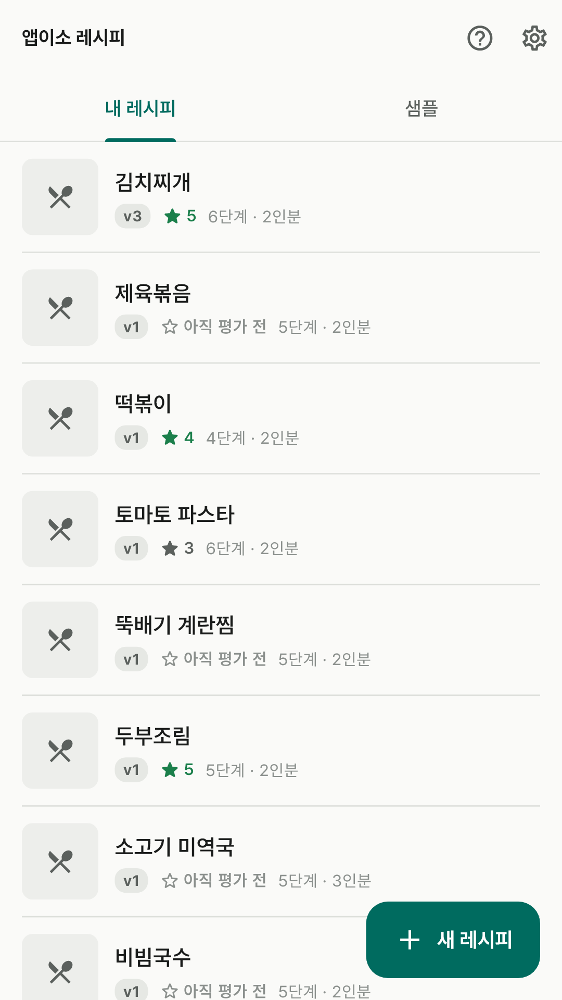
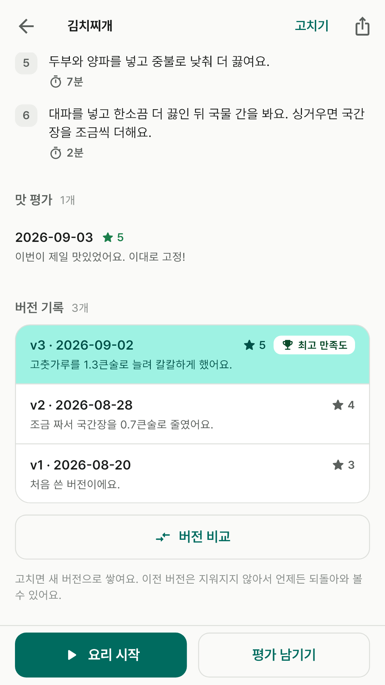
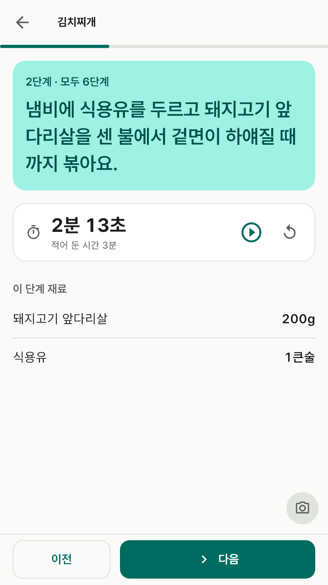
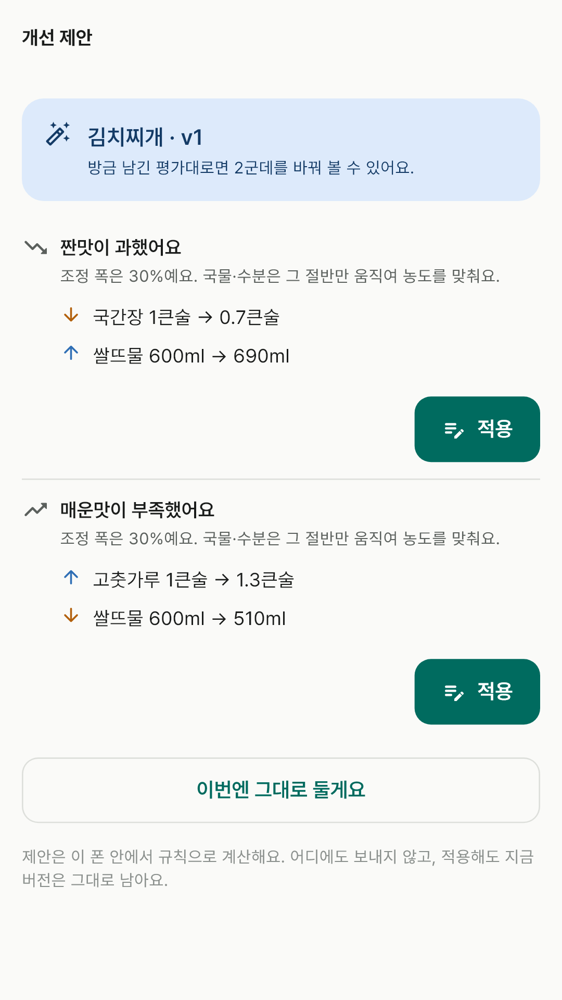
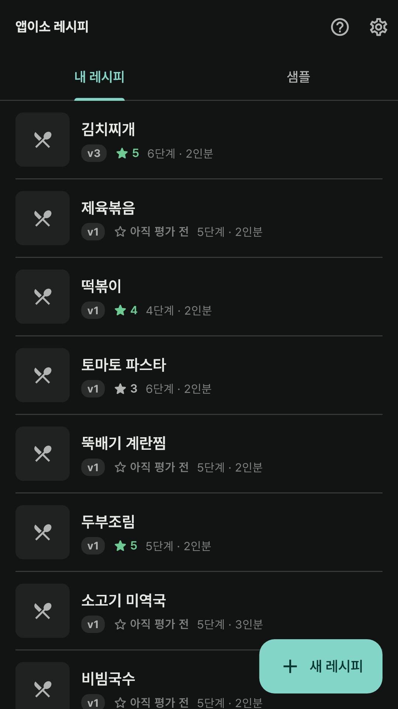

광고 없이 완전 무료입니다. 결제도, 로그인도, 계정도 없습니다.
레시피와 조리 기록, 사진은 모두 휴대폰 안에 저장되고, 서버로 보내지 않습니다 —
서버 자체가 없거든요.
이런 걸 할 수 있어요
고쳐 가며 완성하는 레시피 — 따라 해 보고, 맛을 평가하고, 평가에 맞춰
양을 조절한 새 버전으로 저장해요. 버전마다 별점이 남아서 가장 만족스러웠던 버전에
[최고 만족도] 배지가 붙어요. 이전 버전은 지워지지 않아요.
따라하기 — 지금 단계를 큰 글씨로 하나씩, 그 단계에 필요한 재료와 양이
함께 나와요. 타이머는 여러 개를 동시에 돌릴 수 있고, 요리하는 동안 화면이 꺼지지 않아요.
찍은 사진은 그 단계에 담겨요.
맛 평가와 개선 제안 — 짠맛·단맛·매운맛은 [부족 ← 적당 → 과함]
사이에서, 식감·플레이팅·전체 만족도는 별점으로 남겨요. 평가를 저장하면
[소금 1작은술 → 0.7작은술]처럼 고칠 곳을 제안하고, [적용]하면 다음 버전 밑그림이 돼요.
제안은 폰 안에서 규칙으로 계산해요.
인분 바꾸기와 버전 비교 — 인분을 바꾸면 재료 양이 다시 계산돼요.
두 버전을 나란히 놓고 달라진 재료와 단계를 [늘림]·[줄임]·[추가]·[뺌] 딱지로 봐요.
공유 — 텍스트로, 레시피를 통째로 담은 .recipe 파일로, 완성 사진과
시도 횟수를 담은 자랑 카드로 보내요.
백업과 복원 — 레시피·버전·조리 기록·사진을 파일 하나로 내보내고
되돌려요. 사진은 원본 그대로예요.
샘플 26개 — 찌개·볶음·면처럼 간이 결과를 좌우하는 요리로 채웠어요.
하나를 내 레시피로 복제해 바로 시작할 수 있어요.
화면

홈

버전 기록

따라하기

개선 제안

어두운 테마
사진과 카메라
카메라는 조리 단계나 완성 요리를 찍으려고 앱 안의 카메라 버튼을 눌렀을 때만 열립니다.
찍은 사진은 앱 전용 저장 공간에만 보관되고, 사진첩을 읽어 들이지 않습니다.
폰의 구글 자동 백업에는 용량 한도 때문에 사진이 빠지니, 사진까지 옮기려면
[옵션 > 백업과 복원]으로 백업 파일을 만들어 두세요.
개인정보
이 앱은 개인정보를 수집하지 않습니다. 레시피와 기록도 휴대폰 안에서만 처리하고 밖으로
보내지 않습니다. 자세한 내용은
개인정보처리방침을 확인해 주세요.
문의
버그 제보나 넣었으면 하는 기능이 있으면
appisoLabs@gmail.com 으로 알려주세요.
어떤 버전에서 생긴 일인지(옵션 화면에 적혀 있어요) 같이 적어주시면 도움이 됩니다.